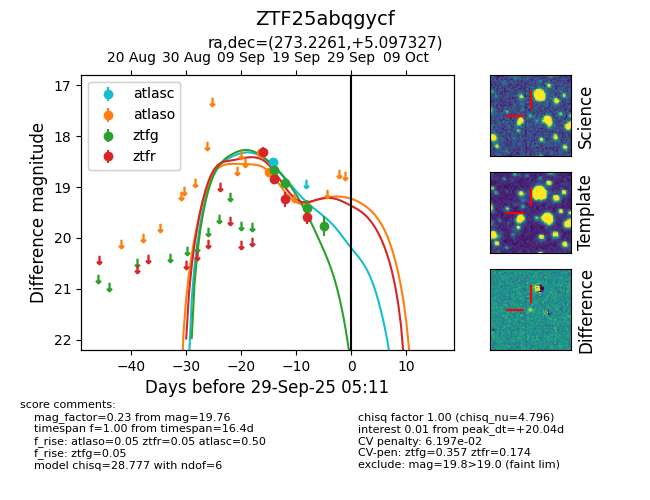
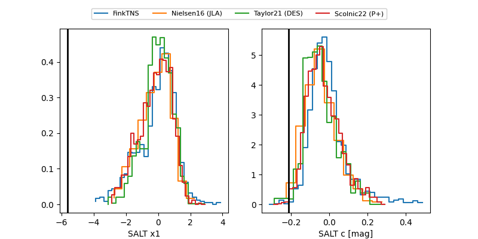

FINK: ZTF25abqgycf
Lasair: ZTF25abqgycf
ALeRCE: ZTF25abqgycf
ZTF25abqgycf (ztf,fink)
equatorial (ra, dec) = (273.2261,+5.09733)
galactic (l, b) = (33.1110,+10.88614)


last atlasc=18.50, atlaso=18.71, ztfg=19.76, ztfr=19.59
1 atlasc, 2 atlaso, 4 ztfg, 4 ztfr detections